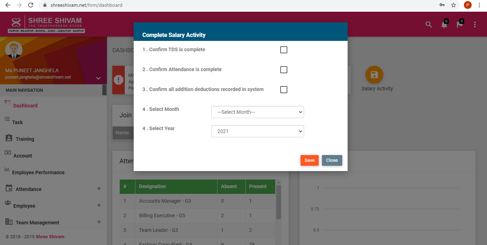
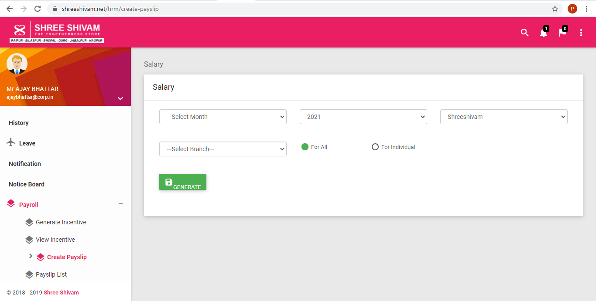
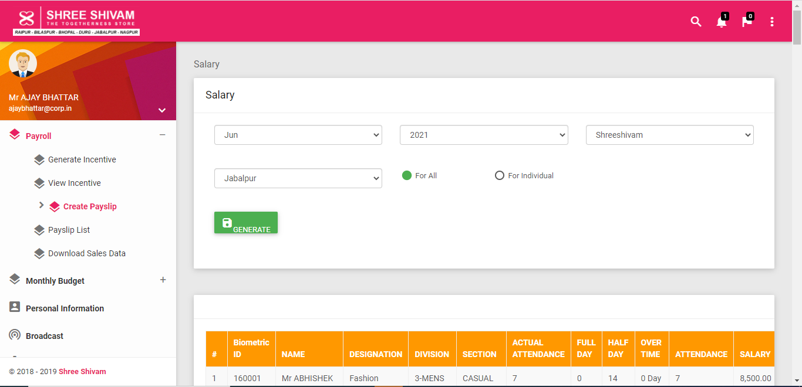
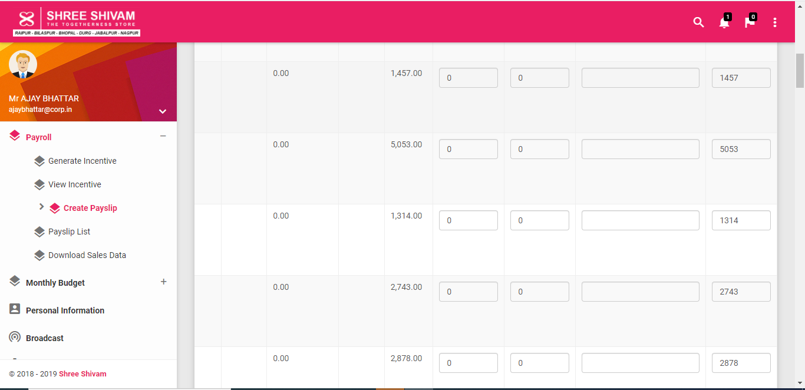
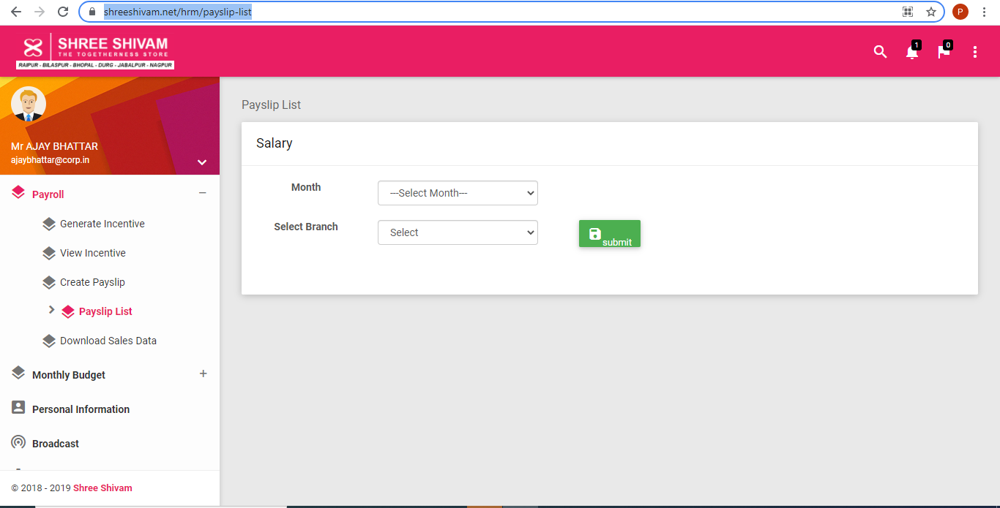
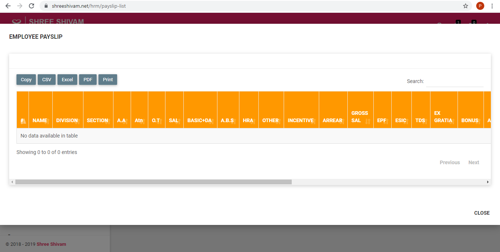

- Login as Branch HR and complete salary activity from dashboard

- Logout and Login as admin
- Go to create payslip menu from sidebar

-
Fill all the fields (month, year, out source, company branch), If you want to generate salary for some individuals then select for individuals radio button, else select for all and then press generate button

-
A table will get loaded below the generate button. You can add/edit other addition and other deduction with remarks if required.

- Click Final Submit button (at the bottom of the page)
- Go to Payslip List menu, select month, branch and press submit button to see generated payslip, you can print, copy and download(in excel, csv and pdf format) the generated payslip

